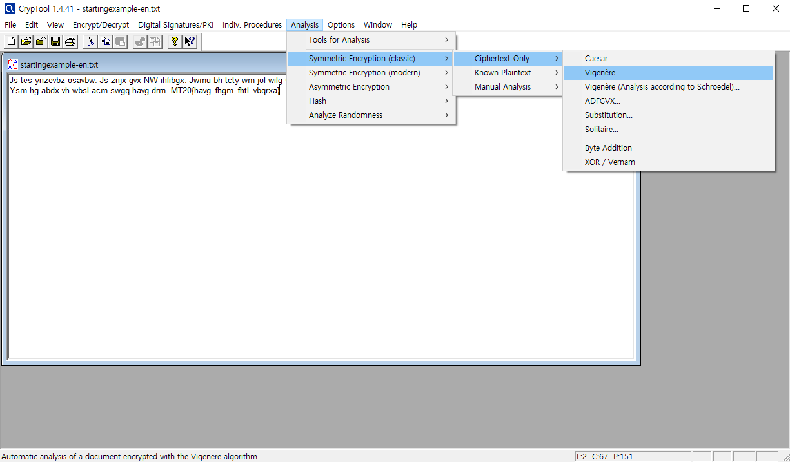
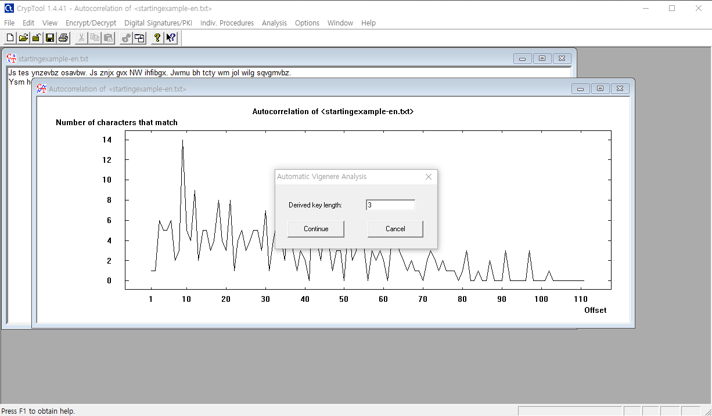
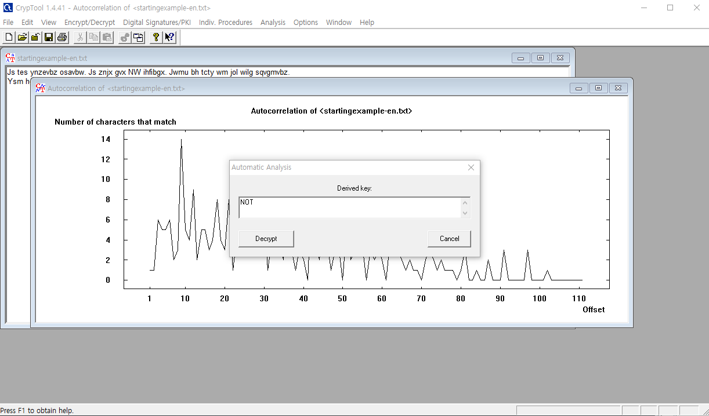
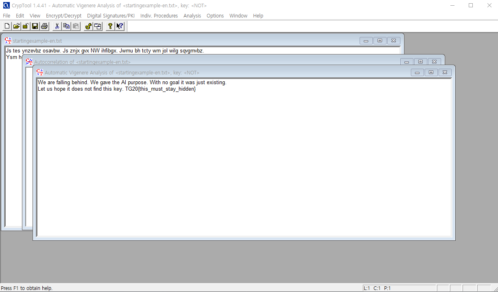
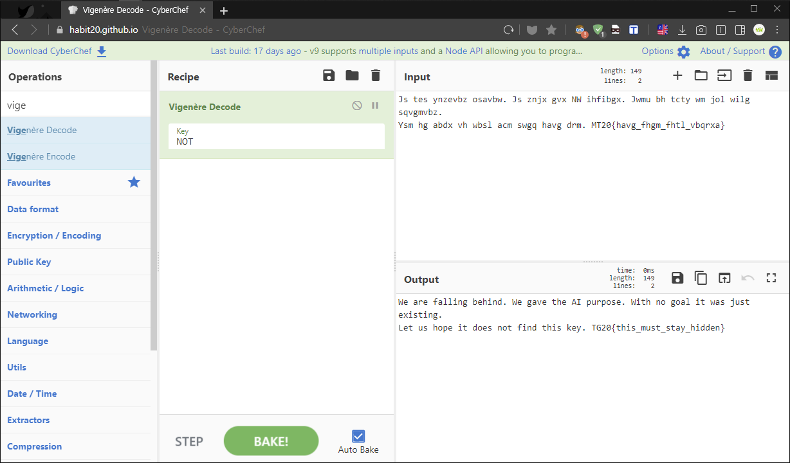

[TGHACK20_n00b5] Mega Shifting
Many of our scientists shifted this message around. Now the AI can’t solve it with frequency analysis. However, we know that the key length is 3.
1 | Js tes ynzevbz osavbw. Js znjx gvx NW ihfibgx. Jwmu bh tcty wm jol wilg sqvgmvbz. |
"많은 우리 과학자들이 이 메세지를 바꿨다. 이제 인공지능(AI)은 빈도 분석으로 해결할 수 없다.
하지만, 우리는 키 길이가 '3’이라는 것을 안다."
✔ Solution
이 문제는 빈도 분석을 사용할 수 없다는 점에서 비즈네르 근대 암호로 판단하고 접근해야 한다.
비즈네로 고전암호는 지난 카이사르 고전암호 업그레이드 버전으로 간단하게 생각하면 좋다.
그렇다면 어떤 점에서 차별화된 암호일까? 이미 예상한 독자도 있겠지만 빈도 분석으로 해독 불가능하다.
그 이유는 비즈네르 테이블 특성상 꽤 많은 경우의 수가 나오도록 설계되었고 특정 키값을 반복해
원문을 알파벳 하나씩 다르게 옮겨서 암호문을 만들기 때문에 항상 같은 값으로 나오지 않는다.

그럼에도 불구하고 우리는 CrypTool 도구를 이용해 비즈네르 암호문을 Break 시켜보겠다.
이 도구는 위 사진에 나온 것처럼 고전/현대 암호를 비롯해 다양한 암호를 해독할 수 있도록 도와준다.

이번 문제는 항상 사용하던 CyberChef Tool 도구를 이용해 풀지 않았다. “그 이유는 키값 3글자를 모르기 때문이다…”
하지만 CrypTool 도구는 키값 길이(3)만 입력하면 암호값을 분석해주기 때문에 활용하기 좋다.

키값 길이(3)는 바로 NOT으로 CrypTool 도구 기능 내 알고리즘을 통해 빠른 시간 내 바로 찾을 수 있었다.
위 사진을 자세히 살펴보면 암호값과 비즈네르표를 분석해 그래프 수치로 시각적으로 보여준다.

훌륭하고 편리한 도구를 이용해 키값 NOT을 알아냈으니 Decrypt 버튼을 통해 바로 해독 가능하다.
추가적으로 이제 키값(NOT)을 파악했으니 지난 CyberChef Tool 도구를 이용해 풀 수 있다.

이 문제에서 우리에게 가장 중요한 사실은 빈도 분석으로 풀 수 없고, 키값 길이(3)를 알려줬다는 내용이다.
이를 참고해 본인이 알고 있는 지식과 편리한 도구를 이용하면 빠른 시간내 복잡한 암호를 풀어낼 수 있다.
다음은 암호문을 해독한 결과값(Output)이다. 여기서 TG20{} 포맷을 찾아서 정답을 제출하면 된다.
1 | We are falling behind. We gave the AI purpose. With no goal it was just existing. |
1 | TG20{this_must_stay_hidden} |
✔ Notes